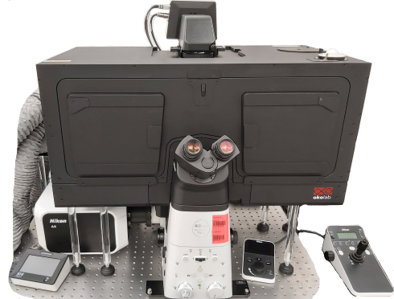

Nikon AX R is a laser scanning confocal microscope
equipped with a resonant scanner for fast confocal imaging,
laser and detector for NIR
fluorescence imaging,
spectrally freely selectable detection channels and NSPARC
detector for super-resolution imaging.
The microscope is housed in an enclosure with temperature, CO2
and humidity control for long-term live-cell imaging.
Hardware autofocus ensures stable focusing during long-term imaging.
Available techniques:
- 3-dimensional confocal imaging (fast with resonant scanner
or high resolution with galvano scanner)
- Super-resolution imaging with NSPARC detector
- NIR fluorescence imaging (730 nm excitation)
- Long-term time-lapse imaging of living cells (with hardware
autofocus and environment control)
Objectives:
Note that only 6 objective lenses can be installed at a time;
for currently installed objectives refer to the booking system. You may
request different objectives when bookig the microscope.
- CFI Plan Apochromat Lambda D 2x/0.1 dry, FWD 8.5 mm, CG
0-0.17 mm
- CFI Plan Apochromat Lambda D 10x/0.45 dry, FWD 4.0 mm, CG
0.17 mm (DIC)
- CFI Plan Apochromat Lambda D 20x/0.8 dry, FWD 0.8 mm, CG
0.17
mm (DIC)
- CFI
Apo LWD λS 20x/0.95 water immersion, FWD 0.9-0.99 mm, CG
0.11-0.23 mm
- CFI Plan Apochromat Lambda S 25x/1.05 silicone, FWD 0.55
mm, CG
0.11-0.23
mm
- CFI Plan Apochromat Lambda D 40x/0.95 dry, FWD 0.21 mm, CG
0.17
mm (DIC)
- CFI Apo LWD λS 40x/1.15 water immersion, FWD
0.59-0.61 mm, CG
0.15-0.19 mm (DIC)
- CFI Plan Apochromat Lambda S 40x/1.25 silicone, FWD 0.3 mm,
CG
0.13-0.21
mm
- CFI Plan Apochromat Lambda D 60x/1.42 oil, FWD 0.15 mm, CG
0.17 mm (DIC)
[FWD = free working distance, CG = cover glass]
Excitation laser lines:
- 405 nm
- 445 nm
- 488 nm
- 561 nm
- 640 nm
- 730 nm
Dichroics and beamplitters:
- 405/488/561/640
- 405/488/561/640/730
- 445/514/590/730
Detectors and cameras:
- 2x GaAsP photomultipliers
- 2x multialkali photomultipliers
- Ex Red GaAsP photomultiplier (NIR optimised)
- NSPARC super-resolution detector (Si single-pixel photon
counter array)
- Trasmitted light photomultiplier
Software:
Other features:
- Heated enclosure with CO2 atmosphere
control
- Automatic immersion water dispenser (for long-term
acquisition with water immersion objectives)
- Motorised stage
- Motorised focus drive
- Perfect focus hardware autofocus
| Usage
fees [SGD/hour]: |
LKCMed |
NTU |
Others (Academia/Industry) |
| Confocal |
25* |
50 |
60 / 96 |
| Airyscan |
| Location |
CSB 11-02P-01
(level 11, support room 10) |
| Safety Notice |
Requires N3 laser
license
|
| Contact |
nobic.facilities@e.ntu.edu.sg |
*Reduced rates apply:
- off-peak hours (weekends,
public holidays and 18.00 - 8.30 on weekdays): 70% of
the rate stated in the table
- 30% of the prevailing rate
applicable after 10 hours of booking/usage
- 30% of the prevailing rate
(that is already the discounted rate in this case) applicable after
24 hours of booking/usage.
BACK TO TOP